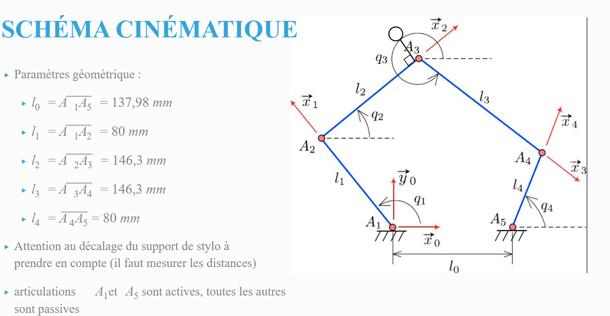

Pantographe en simulation
Source des fichiers
Le modèle 3D de base provient du cours de M. Yguel.
Fichier source : maquette-5-barres_asm.stp (Format STEP).
Comment faire l’URDF
L’URDF (Unified Robot Description Format) est un fichier XML qui décrit la structure cinématique du robot.
La contrainte de la boucle fermée (5 barres)
Notre robot pantographe est mécaniquement une boucle fermée (mécanisme 5 barres). Cependant, le format URDF impose une structure stricte en arbre (arborescence parent-enfant), où chaque pièce ne peut avoir qu’un seul parent.
Error
Il est impossible de définir une boucle fermée directement dans un fichier URDF. Si l’on essaie de relier le dernier maillon au premier, ROS ne pourra pas construire l’arbre cinématique.
La Solution : 2 boucles ouvertes
Pour contourner ce problème, nous définissons le robot dans l’URDF comme deux bras indépendants (deux chaînes ouvertes) qui partent de la même base :
Branche gauche : Base → Moteur G → Bielle G → Bras G
Branche droite : Base → Moteur D → Bielle D → Bras D
Visuellement, les bras se touchent à la fin, mais informatiquement, ils sont séparés. C’est le simulateur ou le contrôleur qui assurera la cohérence physique.
Import des fichiers 3D dans l’URDF
L’URDF ne lit pas directement les fichiers .stp. Il faut utiliser les fichiers .stl exportés précédemment. On utilise la balise <mesh> à l’intérieur de <geometry>.
La syntaxe est la suivante : package://nom_du_dossier/chemin/fichier.stl.
Code URDF complet
Voici le code utilisé pour décrire le pantographe. Notez l’utilisation de scale="0.001 0.001 0.001" pour convertir les meshes (mm) en mètres lors de l’import.
<?xml version="1.0"?>
<robot xmlns:xacro="http://www.ros.org/wiki/xacro" name="five_bar_bot">
<link name="base_link">
<visual>
<origin xyz="0 0 0" rpy="1.57 0 0"/>
<geometry>
<mesh filename="package://five_bar_bot/description/meshes/base.stl" scale="0.001 0.001 0.001"/>
</geometry>
<material name="grey">
<color rgba="0.5 0.5 0.5 1"/>
</material>
</visual>
</link>
<joint name="left_motor_joint" type="revolute">
<parent link="base_link"/>
<child link="left_bielle_link"/>
<origin xyz="-0.08 -0.07 0.032" rpy="0 0 0" />
<axis xyz="0 0 1"/>
<limit lower="-6.28" upper="6.28" effort="10.0" velocity="5.0"/>
</joint>
<link name="left_bielle_link">
<visual>
<origin xyz="0 0 0" rpy="0 0 0"/>
<geometry>
<mesh filename="package://five_bar_bot/description/meshes/link1.stl" scale="0.001 0.001 0.001"/>
</geometry>
<material name="blue">
<color rgba="0 0 0.8 1"/>
</material>
</visual>
</link>
<joint name="left_elbow_joint" type="revolute">
<parent link="left_bielle_link"/>
<child link="left_arm_link"/>
<origin xyz="0.08 0 0.054" rpy="0 0 3.14"/>
<axis xyz="0 0 1"/>
<limit lower="-6.28" upper="6.28" effort="10.0" velocity="5.0"/>
</joint>
<link name="left_arm_link">
<visual>
<origin xyz="0 0 0" rpy="1.57 0 3.92699081699"/>
<geometry>
<mesh filename="package://five_bar_bot/description/meshes/link2.stl" scale="0.001 0.001 0.001"/>
</geometry>
<material name="white">
<color rgba="1 1 1 1"/>
</material>
</visual>
</link>
<joint name="right_motor_joint" type="revolute">
<parent link="base_link"/>
<child link="right_bielle_link"/>
<origin xyz="0.058 -0.07 0.032" rpy="0 0 0"/>
<axis xyz="0 0 1"/>
<limit lower="-6.28" upper="6.28" effort="10.0" velocity="5.0"/>
</joint>
<link name="right_bielle_link">
<visual>
<origin xyz="0 0 0" rpy="0 0 0"/>
<geometry>
<mesh filename="package://five_bar_bot/description/meshes/link4.stl" scale="0.001 0.001 0.001"/>
</geometry>
<material name="blue"/>
</visual>
</link>
<joint name="right_elbow_joint" type="revolute">
<parent link="right_bielle_link"/>
<child link="right_arm_link"/>
<origin xyz="0.079 0 0.053" rpy="0 0 3.14"/>
<axis xyz="0 0 1"/>
<limit lower="-6.28" upper="6.28" effort="10.0" velocity="5.0"/>
</joint>
<link name="right_arm_link">
<visual>
<origin xyz="0 0 0" rpy="-1.57 0 -3.92699081699"/>
<geometry>
<mesh filename="package://five_bar_bot/description/meshes/link3.stl" scale="0.001 0.001 0.001"/>
</geometry>
<material name="white"/>
</visual>
</link>
<ros2_control name="FiveBarBotSystem" type="system">
<hardware>
<plugin>mock_components/GenericSystem</plugin>
</hardware>
<joint name="left_motor_joint">
<command_interface name="position"/>
<state_interface name="position"/>
</joint>
<joint name="right_motor_joint">
<command_interface name="position"/>
<state_interface name="position"/>
</joint>
<joint name="left_elbow_joint">
<command_interface name="position"/> <state_interface name="position"/>
</joint>
<joint name="right_elbow_joint">
<command_interface name="position"/> <state_interface name="position"/>
</joint>
</ros2_control>
</robot>
Configuration des contrôleurs
Pour piloter le robot en simulation, nous devons définir les paramètres du gestionnaire de contrôle (controller_manager). Créez un fichier nommé controllers.yaml (généralement situé dans le dossier config/ de votre paquet) et ajoutez-y le contenu suivant :
controller_manager:
ros__parameters:
update_rate: 100 # Hz
joint_state_broadcaster:
type: joint_state_broadcaster/JointStateBroadcaster
forward_position_controller:
type: forward_command_controller/ForwardCommandController
forward_position_controller:
ros__parameters:
interface_name: position
joints:
- left_motor_joint
- right_motor_joint
- left_elbow_joint # Nécessaire pour la simulation
- right_elbow_joint # Nécessaire pour la simulation
Note
Pourquoi contrôler les coudes (“elbows”) ?
Vous remarquerez l’ajout de left_elbow_joint et right_elbow_joint dans la liste des articulations contrôlées.
Bien que ces articulations soient des liaisons passives dans la réalité (elles n’ont pas de moteurs et suivent simplement le mouvement mécanique), elles doivent être déclarées comme contrôlées dans la simulation.
Cette configuration est indispensable pour fermer cinématiquement la boucle. Sans cela, le simulateur physique pourrait traiter la structure comme une chaîne ouverte, entraînant un comportement physique incorrect ou instable. En leur attribuant une interface de position, nous forçons le simulateur à respecter la contrainte de fermeture géométrique du mécanisme.
Modèle Géométrique et Contrôle
Pour piloter le robot, nous devons traduire une position cartésienne cible $(X, Y)$ en angles moteurs. C’est le rôle du Modèle Géométrique Inverse (MGI).
Schéma Cinématique
Le robot est une structure parallèle de type “Five-Bar”. Voici les paramètres géométriques et les repères définis pour la modélisation :
{kind=link}

Paramètres du Code
Le script de contrôle Python intègre les dimensions exactes mesurées sur le robot réel (ou l’URDF) :
- Bras Gauche (Left Arm - $A_1 to A_2 to P$) :
Position Moteur ($A_1$) : $x = -0.08m, y = -0.07m$
Longueur $L_1$ : $0.080m$
Longueur $L_2$ : $0.157m$
- Bras Droit (Right Arm - $A_5 to A_4 to P$) :
Position Moteur ($A_5$) : $x = 0.058m, y = -0.07m$
Longueur $L_1$ : $0.079m$
Longueur $L_2$ : $0.147m$
Résolution Mathématique (MGI)
La fonction solve_arm_ik du script découpe le problème en deux chaînes articulées indépendantes (RR : Rotoïde-Rotoïde). Pour chaque bras, nous formons un triangle entre le moteur, le coude et la cible.
Nous utilisons le Théorème d’Al-Kashi (Loi des cosinus) pour trouver les angles articulaires.
Calcul de la distance et de l’angle global : On calcule le vecteur entre le moteur et la cible $(dx, dy)$ et la distance $D$.
$$ D = sqrt{dx^2 + dy^2} $$ $$ alpha = arctan2(dy, dx) $$
Calcul de l’angle moteur ($theta_{motor}$) : L’angle interne $beta$ du triangle au niveau du moteur est donné par :
$$ cos(beta) = frac{L_1^2 + D^2 - L_2^2}{2 cdot L_1 cdot D} $$
L’angle final du moteur dépend de la configuration du coude (signe de $beta$) :
$$ theta_{motor} = alpha + (text{config} times beta) $$
Calcul de l’angle du coude ($theta_{elbow}$) : Bien que passif en réalité, cet angle est calculé pour la simulation afin de fermer la chaîne cinématique.
$$ cos(gamma) = frac{L_1^2 + L_2^2 - D^2}{2 cdot L_1 cdot L_2} $$ $$ theta_{elbow} = gamma $$
Script de Contrôle (Python)
Ce script ROS 2 implémente la logique ci-dessus. Il inclut également : * Une interpolation linéaire pour lisser les mouvements. * Des vérifications de sécurité (limites angulaires et portée maximale). * La publication des commandes pour les 4 joints (2 moteurs + 2 coudes simulés).
1 #!/usr/bin/env python3
2 import rclpy
3 from rclpy.node import Node
4 from std_msgs.msg import Float64MultiArray
5 import math
6 import threading
7 import time
8
9 # === PARAMETRES EXACTS (URDF) ===
10 MOTOR_L_POS = (-0.08, -0.07)
11 L1_L = 0.080
12 L2_L = 0.157
13
14 MOTOR_R_POS = (0.058, -0.07)
15 L1_R = 0.079
16 L2_R = 0.147
17
18 # === CONTRAINTES DE SECURITE ===
19 R_MOT_MIN_DEG = 5.0
20 R_MOT_MAX_DEG = 114.0
21
22 # === PARAMETRES DE MOUVEMENT ===
23 VITESSE_M_S = 0.05
24 FREQ_LOOP = 50.0
25 DT = 1.0 / FREQ_LOOP
26
27 class FiveBarSafe(Node):
28 def __init__(self):
29 super().__init__('five_bar_safe')
30
31 # Publication vers le contrôleur défini dans controllers.yaml
32 self.publisher_ = self.create_publisher(
33 Float64MultiArray,
34 '/forward_position_controller/commands',
35 10)
36
37 # Position initiale sure
38 self.curr_x = -0.01
39 self.curr_y = 0.12
40 self.target_x = self.curr_x
41 self.target_y = self.curr_y
42
43 self.last_valid_cmd = [0.0, 0.0, 0.0, 0.0]
44
45 self.timer = self.create_timer(DT, self.control_loop)
46
47 # Thread séparé pour ne pas bloquer ROS avec l'input utilisateur
48 self.input_thread = threading.Thread(target=self.user_input_loop)
49 self.input_thread.daemon = True
50 self.input_thread.start()
51
52 self.get_logger().info(f"Démarrage sûr à X={self.curr_x}, Y={self.curr_y}")
53
54 def solve_arm_ik(self, target_x, target_y, motor_x, motor_y, L1, L2, elbow_config):
55 """
56 Calcule la cinématique inverse pour un bras (Moteur -> Coude -> Cible)
57 Utilise le théorème d'Al-Kashi.
58 """
59 dx = target_x - motor_x
60 dy = target_y - motor_y
61 dist = math.sqrt(dx*dx + dy*dy)
62
63 # Vérification de portée (Workspace)
64 if dist > (L1 + L2) or dist < abs(L1 - L2):
65 return None, None
66
67 # Calcul de l'angle alpha (direction cible)
68 alpha = math.atan2(dy, dx)
69
70 # Calcul de l'angle beta (angle interne moteur) via Al-Kashi
71 val_cos_beta = (L1**2 + dist**2 - L2**2) / (2 * L1 * dist)
72 val_cos_beta = max(-1.0, min(1.0, val_cos_beta)) # Clamp pour éviter erreurs num.
73 beta = math.acos(val_cos_beta)
74
75 # Angle moteur final (dépend de la config coude haut/bas)
76 theta_motor = alpha + (elbow_config * beta)
77
78 # Calcul de l'angle gamma (angle interne coude) via Al-Kashi
79 val_cos_gamma = (L1**2 + L2**2 - dist**2) / (2 * L1 * L2)
80 val_cos_gamma = max(-1.0, min(1.0, val_cos_gamma))
81 gamma = math.acos(val_cos_gamma)
82
83 theta_elbow = gamma
84
85 return theta_motor, theta_elbow
86
87 def control_loop(self):
88 # 1. Génération de trajectoire (Interpolation linéaire)
89 dx = self.target_x - self.curr_x
90 dy = self.target_y - self.curr_y
91 dist_to_target = math.sqrt(dx*dx + dy*dy)
92 step = VITESSE_M_S * DT
93
94 next_x, next_y = self.curr_x, self.curr_y
95
96 if dist_to_target > 0.001:
97 if dist_to_target < step:
98 next_x, next_y = self.target_x, self.target_y
99 else:
100 ratio = step / dist_to_target
101 next_x += dx * ratio
102 next_y += dy * ratio
103
104 # 2. Calcul IK pour les deux bras
105 # Note: elbow_config=1 pour gauche, -1 pour droite
106 mot_L, elb_L = self.solve_arm_ik(
107 next_x, next_y, MOTOR_L_POS[0], MOTOR_L_POS[1], L1_L, L2_L, 1
108 )
109 mot_R, elb_R = self.solve_arm_ik(
110 next_x, next_y, MOTOR_R_POS[0], MOTOR_R_POS[1], L1_R, L2_R, -1
111 )
112
113 valid_move = True
114
115 # Vérification validité solution
116 if mot_L is None or mot_R is None:
117 valid_move = False
118
119 # Vérification limites moteur droit
120 if valid_move:
121 mot_R_deg = math.degrees(mot_R)
122 if not (R_MOT_MIN_DEG <= mot_R_deg <= R_MOT_MAX_DEG):
123 self.get_logger().warn(f"LIMITE ANGLE : {mot_R_deg:.1f}°")
124 valid_move = False
125
126 # 3. Envoi de la commande
127 msg = Float64MultiArray()
128
129 if valid_move:
130 self.curr_x = next_x
131 self.curr_y = next_y
132 # Ordre: [Left_Mot, Right_Mot, Left_Elbow, Right_Elbow]
133 # Notez le '-elb_R' pour corriger l'orientation du repère
134 self.last_valid_cmd = [mot_L, mot_R, elb_L, -elb_R]
135 msg.data = self.last_valid_cmd
136 else:
137 # Si mouvement invalide, maintien de la position (Torque ON)
138 msg.data = self.last_valid_cmd
139 if dist_to_target > 0.01:
140 self.target_x = self.curr_x # Reset target si bloqué
141 self.target_y = self.curr_y
142
143 self.publisher_.publish(msg)
144
145 def user_input_loop(self):
146 time.sleep(1)
147 print("\n--- CONTROLEUR SECURISE ---")
148 while rclpy.ok():
149 try:
150 print("Entrez cible X Y :")
151 in_x = input(" X > ")
152 in_y = input(" Y > ")
153 x_val = float(in_x)
154 y_val = float(in_y)
155
156 if y_val < 0.0:
157 print("Refusé (Y < 0)")
158 continue
159
160 self.target_x = x_val
161 self.target_y = y_val
162 except ValueError:
163 print("Erreur de saisie.")
164
165 def main(args=None):
166 rclpy.init(args=args)
167 node = FiveBarSafe()
168 try:
169 rclpy.spin(node)
170 except KeyboardInterrupt:
171 pass
172 finally:
173 node.destroy_node()
174 rclpy.shutdown()
175
176 if __name__ == '__main__':
177 main()
Comment paramétrer RVIZ pour l’affichage
Guide pour configurer le “Global Frame”, ajouter le “RobotModel” et sauvegarder la config .rviz.
Comment bien exporter les pièces du Créo
Pour que le robot s’articule correctement dans Rviz ou Gazebo, l’export des fichiers 3D doit suivre une méthodologie rigoureuse.
Format de fichier : Bien que la source soit en STEP (.stp), les fichiers doivent être exportés en .STL pour être lisibles par l’URDF.
Unité : La CAO est souvent en millimètres (mm). ROS travaille en mètres (m).
Astuce : On applique une échelle de
0.001dans l’URDF plus tard, pas besoin de redimensionner la pièce dans Créo.Le Repère (Origine) : C’est l’étape la plus critique.
Lors de l’export de chaque pièce (base, bielles, bras), il faut définir un repère de sortie.
Warning
Il ne faut pas utiliser l’origine globale de l’assemblage !
Il faut choisir le repère situé au niveau de la liaison avec la pièce précédente (le parent).
Exemple : Pour la bielle gauche, l’origine du fichier STL doit être placée exactement sur l’axe du moteur gauche.
Si cela n’est pas fait, la pièce tournera autour d’un point arbitraire au lieu de tourner autour de son axe.